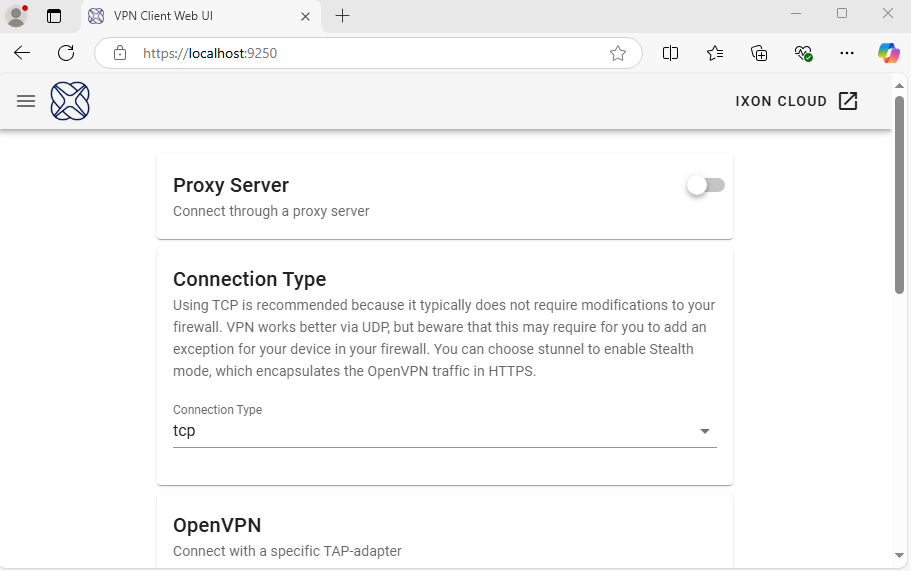
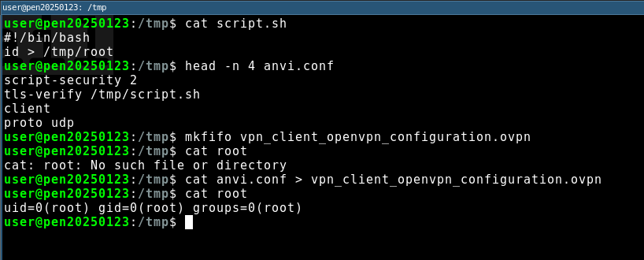
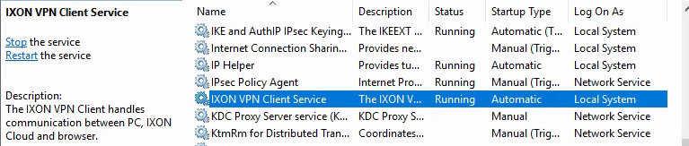

TL;DR
This post will describe three new vulnerabilities CVE-2025-26168, CVE-2025-26169 and CVE-2025-TBA which were found in the IXON VPN client. These vulnerabilities result in Local Privilege Escalation on Windows and Linux, in addition to a quite interesting [REDACTED].
CVE IDs were requested for the vulnerabilities, but none have been assigned yet due to current funding limitations and a backlog at MITRE. This article will be updated as soon as CVE IDs are allocated.
Follow along for the full disclosure.
Background
Welcome, hope your coffee is warm and your local weather is good etc, etc. During a recent security assessment, Shelltrail was provided access to an environment through a cloud VPN provider, namely IXON. IXON is a Dutch company specializing in devices and remote access to industrial systems.
To use the IXON VPN, the user must purchase a physical remote access device and connect it to a network via Ethernet. The IXON device calls back to a cloud environment over the internet provided via Ethernet or mobile data. Once installed and setup, the user can access a cloud portal to establish a VPN connection, enabling secure access to the local network where the device is deployed.
At least for a pentester, a lot of questions now need answers before a restful night’s sleep can be justified.
Under-the-hood
So in order to connect to a IXON VPN device their proprietary VPN client must
be installed. This client is downloaded from https://ixon.cloud,
the same location where the user initiates the VPN connection from. This cloud portal
requires the user to provide username and password (and additionally MFA) and the
user must be invited to access a specific IXON VPN device.
So we now know that some kind of interaction must happen between the https://ixon.cloud
web page and the locally installed VPN client.
By enumerating the installed VPN client it was discovered that a local web server
was running on https://localhost:9250. This was found to be a custom
compiled C-binary which enables a local user configuration options for the VPN
client.
$ file /etc/ixon/vpn_client/vpn_client
/etc/ixon/vpn_client/vpn_client: ELF 64-bit LSB pie executable, x86-64,
version 1 (GNU/Linux), dynamically linked, interpreter /lib64/ld-linux-x86-64.so.2,
for GNU/Linux 3.2.0, BuildID[sha1]=032477110a2d9103328159ac17cbf0bdf18f9b91, stripped

This vpn_client, at least on Linux runs as a systemd service:
$ systemctl status ixon_vpn_client.service
? ixon_vpn_client.service - VPN Client (IXON Remote Service)
Loaded: loaded (/etc/systemd/system/ixon_vpn_client.service; enabled; preset: disabled)
Active: active (running) since Tue 2025-01-28 10:17:54 CET; 3 weeks 0 days ago
Invocation: 5ccedc9d3ed4485983755fcba25deae0
Main PID: 113045 (vpn_client)
Tasks: 8 (limit: 16628)
Memory: 10.8M (peak: 13.6M)
CPU: 645ms
CGroup: /system.slice/ixon_vpn_client.service
??113045 /etc/ixon/vpn_client/vpn_client
And it is running as root:
$ ps auxww | grep vpn_client
root 113045 0.0 0.1 747844 16976 ? Ssl 00:22 0:00 /etc/ixon/vpn_client/vpn_client
For instance, this Web UI allows a local user to set up a Proxy server, specify VPN Connection Type, modify OpenVPN TAP adapter settings or change which certificates the web server should be running with.
This gives a good idea on how the https://ixon.cloud may interact with the
locally installed VPN client and also that we’re dealing with OpenVPN as
our underlying VPN software.
Connection establishment
So, upon clicking connect on a VPN device in the https://ixon.cloud an XHR request is sent
by JavaScript from the users browser to the https://localhost:9250 web service:
POST /connect HTTP/1.1
Host: localhost:9250
Api-Access-Token: a[..REDACTED_ACCESS_TOKEN..]b
Api-Version: 2
Vpn-Client-Controller-Identifier: a[..REDACTED..]b
User-Agent: Mozilla/5.0 (X11; Linux x86_64) AppleWebKit/537.36 (KHTML, like Gecko) Chrome/131.0.0.0 Safari/537.36
Content-Type: application/json
Origin: https://portal.ixon.cloud
Referer: https://portal.ixon.cloud/
{
"companyId":"a[..REDACTED..]b",
"agentId":"a[..REDACTED..]b"
}
This request contains three important entries. Api-Access-Token, companyId
and agentId. These three pieces make up the authentication and authorization
to whether or not a connection should be allowed.
The Api-Access-Token is the same authentication bearer which is used in
https://ixon.cloud and the agentId refers to which IXON VPN device the connection
shall be established.
When the local web server receives this request, it forwards it to https://ixon.cloud
and appends local VPN client configuration details:
POST /api/users/me/vpn-configs?fields=agent(publicId,name,activeVpnSession(rscServer.name,vpnAddress),config(routerLan(network,netMask),routerAdditionalSubnets(networkAddress,networkMask))),company(publicId,name) HTTP/2
Host: portal.ixon.cloud
Authorization: Bearer a[..REDACTED_ACCESS_TOKEN]b
Api-Company: a[.:REDACTED..]
Accept: application/json
Api-Version: 2
User-Agent: VPN Client/1.4.2 (Linux x86_64 (Kernel 6.11.2-amd64))
{
"type":"openvpn"
"networkLayer":"tap"
"transportProtocol":"tcp"
"agent":{"publicId":"[..REDACTED..]"}
"addRoutes":"true"
"rsaPubKey":"-----BEGIN RSA PUBLIC KEY-----\n[..REDACTED..]\n-----END RSA PUBLIC KEY-----\n"
}
The response from this request is an OpenVPN configuration (.ovpn) which the local OpenVPN binary
provided by IXON uses as connection.
CVE-2025-TBA - [REDACTED]
It has been decided that this vulnerability will not be disclosed until a public fix is available. IXON is aware of the issue; however, addressing it requires potentially impactful configuration changes. The attack is quite niche and while IXON has accepted that the vulnerability may be disclosed, Shelltrail has determined that publishing it without a proper fix would be irresponsible at this time.
CVE-2025-26168 - IXON VPN Client Local Privilege Escalation Linux
Right. So we now have a quite good understanding of the inner workings of the IXON VPN client. If you remember, that when the VPN connection is about to be established the local binary receives an OpenVPN configuration. When reviewing this hand-off, it was noted that the OpenVPN conf is temporarily stored on disk.
By watching the file writes of vpn_client is was found that the OpenVPN conf
is stored in the /tmp directory, with a predictable name: /tmp/vpn_client_openvpn_configuration.ovpn. The pentester brain goes full throttle.
Moreover, as soon as the VPN connection was established, the temporary OpenVPN conf was deleted.
OpenVPN is known for being able to execute shell scripts during the connection
process if a user provides up, pre or tls-verify in the configuration
accompanied with a script-security level of 2.
script−security 2
tls−verify /tmp/script.sh
[...]
So if we successfully smuggle the tls-verify and script-security parameters
to the OpenVPN conf we will have code execution as root.
The initial idea was to use the proxy feature vpn_client to replace the OpenVPN
conf during transmission however this is not possible due to certificate validation in
the TLS transmission.
Second idea was to pre-configure a OpenVPN conf at /tmp/vpn_client_openvpn_configuration.ovpn
and make it immutable with chattr +i <file> so that the vpn_client cannot
overwrite it. This did not work as the vpn_client process would stall if the configuration file
did not have the correct file permissions.
The same problem arised with all types of symbolic link and chown stunts thrown
at the file location.
Some days passed and this what looked as an text-book privilege escalation was yet not solved.
Until… We thought about pipes!
The mkfifo command is used to create named pipes (FIFOs) in Linux. A FIFO (First In, First Out) is a special type of file that allows for inter-process communication (IPC), where one process writes data to the pipe, and another process reads from it.
If a pre-created FIFO named pipe exists at the /tmp/vpn_client_openvpn_configuration.ovpn
location and a VPN connection is activated the vpn_client will stall, until a
OpenVPN is written to the pipe.
The following steps are shown in the upcoming image:
- Prints the content of /tmp/script.sh
- Prints the first 4 lines of a working OpenVPN configuration
- Creates a FIFO named pipe at the known location of the temporarily stored VPN configuration
- Shows that the file /tmp/root does not exist
- (Now the user logs in to portal.ixon.cloud and connects to a VPN device)
- The
vpn_clientbinary stalls and waits for a OpenVPN configuration - A malicious OpenVPN configuration is written to the named pipe and executes the supplied script as root and prints the proof to a file named /tmp/root

Things to highlight here is that the OpenVPN conf need to successfully connect
in order for the tls-verify script to execute. That same requirements goes for
up. In order for down to execute the connection first needs to be established and
then later closed.
Running pre connect scripts has been discussed 12 years ago and was declined due to being a security risk (https://community.openvpn.net/openvpn/ticket/284).
This has been proposed before and I have NACKed it due to security issues related to this approach.
If anyone has ideas for circumventing the connection establishment caveat feel free to drop us a message.
CVE-2025-26169 - IXON VPN Client Local Privilege Escalation Windows
Oh - I’m glad you asked. Of course there is a Windows client to have a look at.
The process of establishing a VPN connection works the same way as for Linux.
The vpn_client runs as a service in the content of NT Authority\SYSTEM:

And when connecting with the IXON VPN client the OpenVPN conf is temporarily
stored in C:\Windows\Temp. Aaah, happy Tales from the %TEMP% like an old
colleague would phrase it.
Here comes our top 5 fun facts about %TEMP% that you can discuss at boring dinner parties:
NT Authroity\SYSTEM’s environment variable %TEMP% refers toC:\Windows\Temp- Standard users, %TEMP% point to
C:\Users\<username>\AppData\Local\Temp - Standard users cannot list content in
C:\Windows\Temp - Standard users can create sub-folders and files in
C:\Windows\Temp - The creator of the file or sub-folder gains full permissions.
So we know the filename that will be created and deleted in the C:\Windows\Temp.
And we can control the path prior to the service writing a OpenVPN conf to the location.
Wouldn’t it be cool to use the arbitrary file delete privilege escalation
technique trough Windows installer rollback as described in https://www.zerodayinitiative.com/blog/2022/3/16/abusing-arbitrary-file-deletes-to-escalate-privilege-and-other-great-tricks.
Of course it would be cool, but this requires the folder to be empty where the
symlink is to be created - and that is not possible for C:\Windows\Temp.
Sometimes, not every idea has to be sophisticated… Maybe a while
loop in Powershell as a low privileged user which continuously copies our malicious OpenVPN
conf to the predictable file location will result in a race condition
and execution of our script.
Lets find out:
Great success.
Summary
IXON were very responsive in the communication and remediation for the vulnerabilities. Both privilege escalations were simply resolved by moving the temporary OpenVPN conf to a folder where only high privilege users had access.
The [REDACTED] is yet to be fixed.
The vulnerabilities are tracked by IXON at https://support.ixon.cloud/s/article/Security-advisories with the ID ADV-2025-03-17.
IXON recommend customers upgrading to version 1.4.4 or later of the VPN client.
Follow us on LinkedIn (https://linkedin.com/company/shelltrail) for more cybersecurity related content,
Cheers